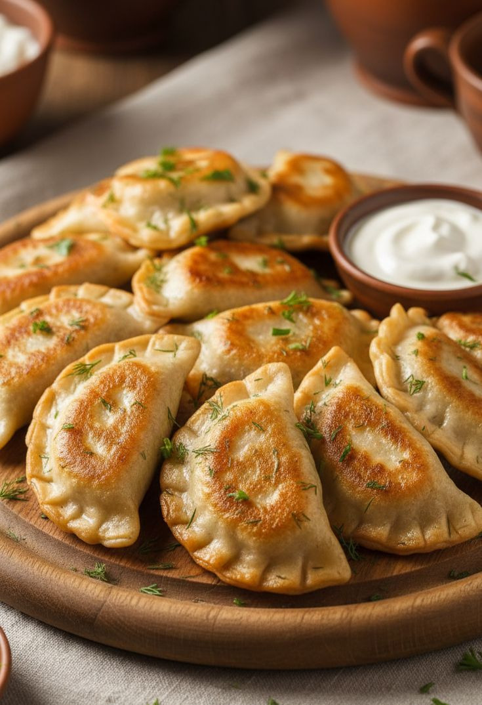
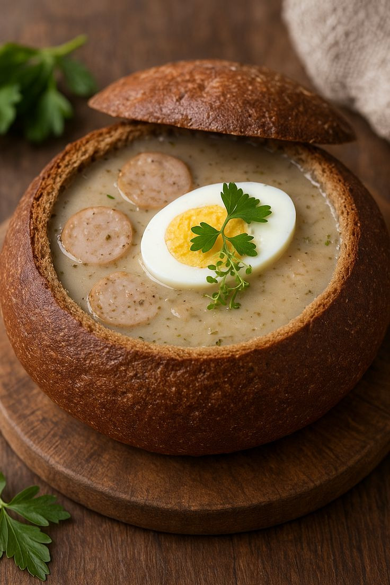
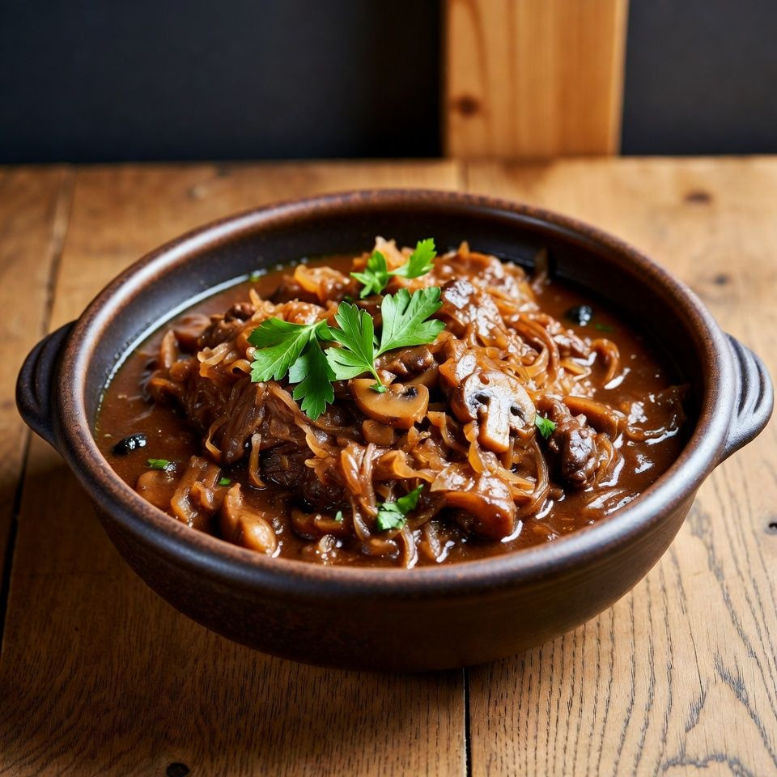
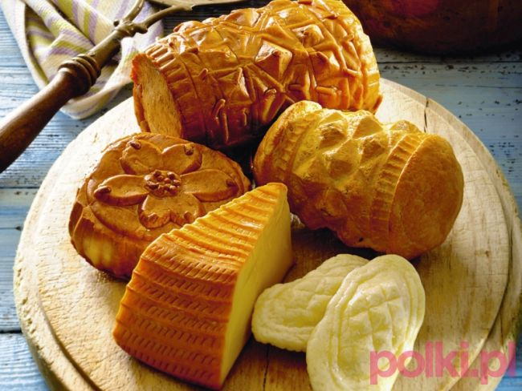
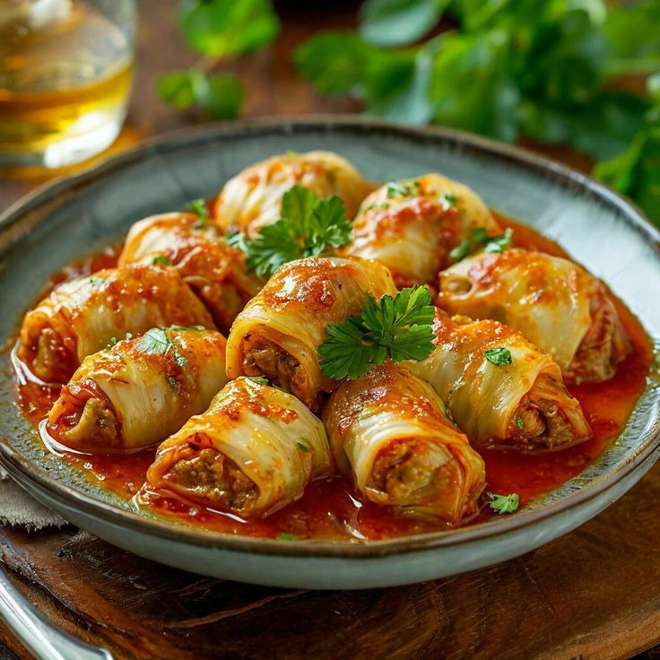
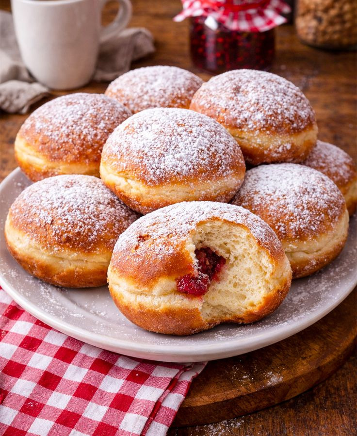

Poland
Introduction
La cuisine polonaise est généreuse, traditionnelle et profondément influencée par les saisons. Riche en saveurs réconfortantes, elle reflète l'âme du pays : des grand-mères aux fourneaux aux marchés colorés, chaque plat raconte une histoire. Pommes de terre, chou, viande fumée et épices douces en sont les ingrédients emblématiques.
Plats Incontournables

Les pierogi sont les emblématiques raviolis polonais, farcis de viande, fromage, champignons ou fruits. Servis avec de la crème sure et du beurre fondu, ils sont LE plat national.

Soupe aigre au seigle de couleur trouble, servie dans un pain rond, avec du saucisson fumé et des œufs. Un délice réconfortant des matins d'hiver.

Ce ragoût de choucroute est un mélange savoureux de viandes fumées, choux, pruneaux et champignons. Préparé en grande quantité, il est encore meilleur réchauffé.

Fromage fumé typique des Tatras, fabriqué à partir de lait de brebis. Grillé et servi avec de la confiture de airelles, c'est l'en-cas montagnard par excellence.

Feuilles de chou farcies de viande hachée et de riz, cuites dans une sauce tomate. Ce plat de grandma rappelle les réunions de famille.

Ces beignets légers fourrés à la confiture de rose sont une institution. Riches en beurre et œufs, ils sont traditionnellement mangés le jeudi gras.
Boissons
La Pologne prétend être le berceau de la vodka. Żubrówka, Wyborowa ou Chopin — chacune a son caractère. À tasting !
La célèbre bière blonde de Zakopane, légère et rafraîchissante. La marque emblématique de la montagne polonaise.
Boisson chaude aux fruits secs, préparée en hiver. Un concentré de saveurs douces qui réchauffe le cœur.